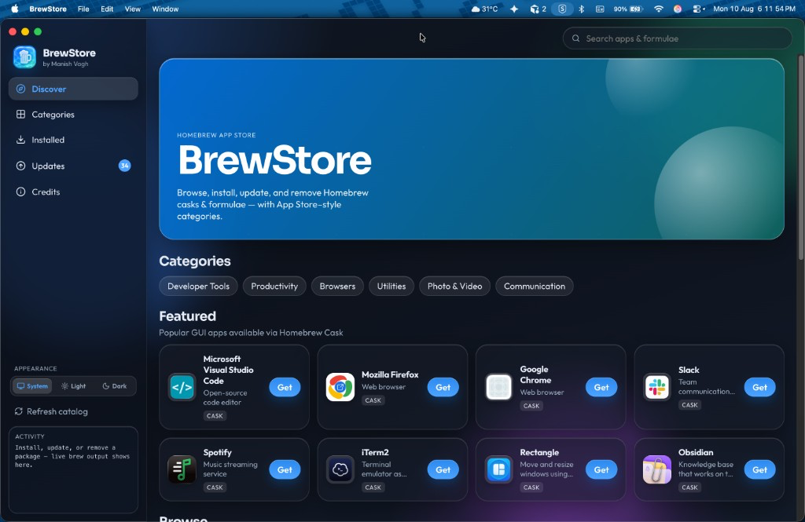
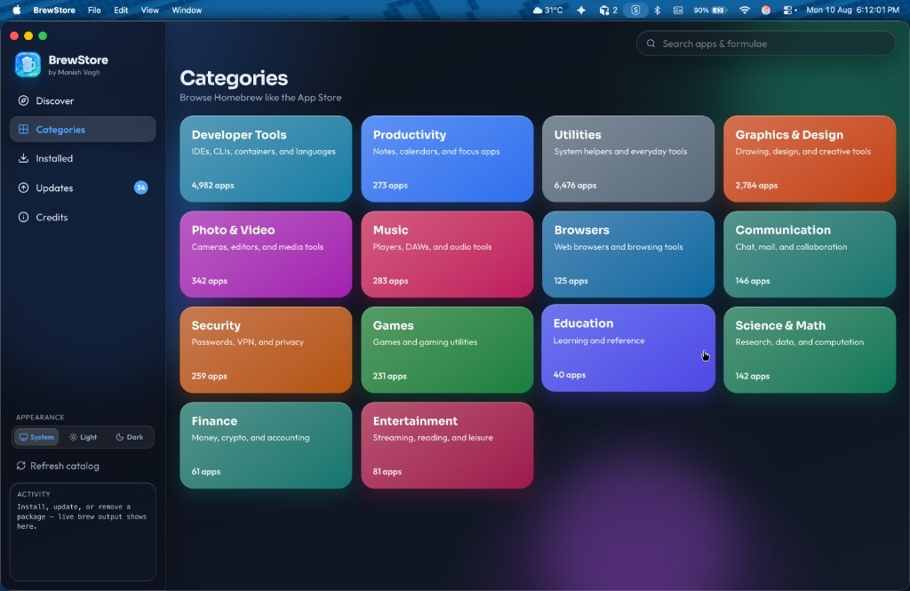
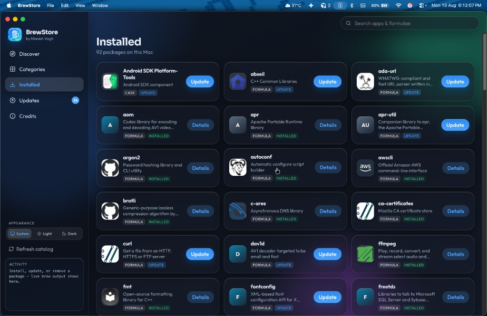
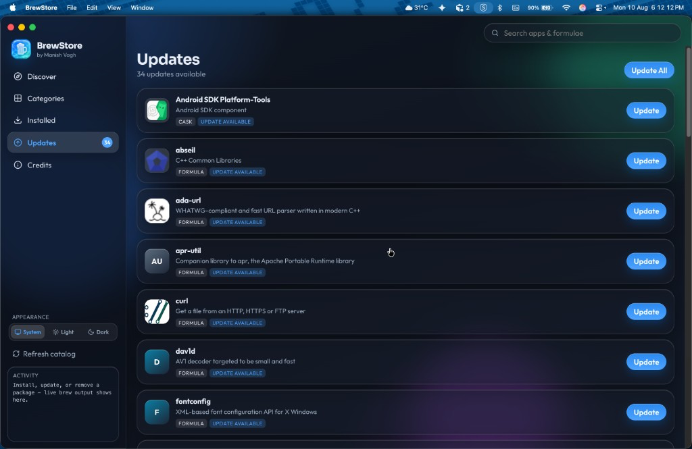
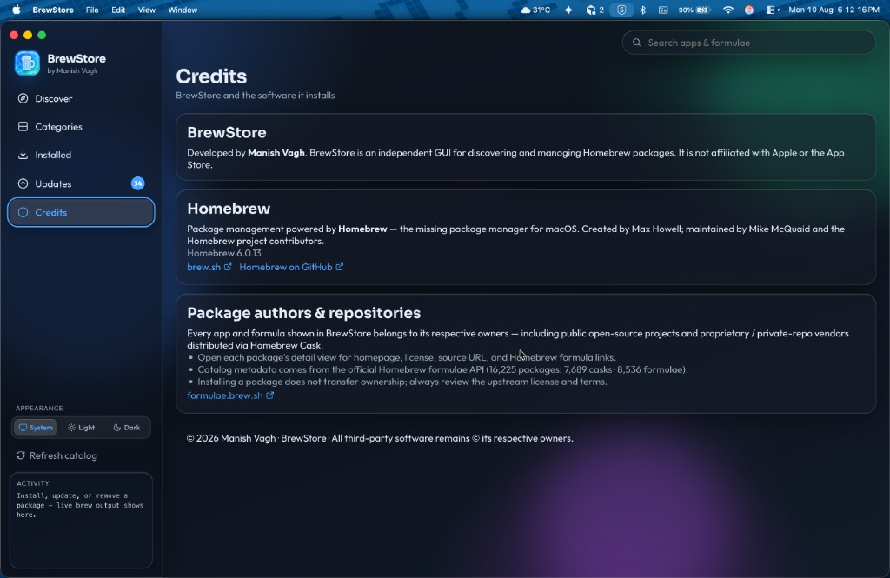

Discover like the App Store
Featured GUI apps, category chips, and search across thousands of Homebrew casks and formulae — without memorizing package names.
by Manish Vagh
Homebrew with an App Store UI — browse, install, update, and remove casks & formulae without living in the terminal.

Featured GUI apps, category chips, and search across thousands of Homebrew casks and formulae — without memorizing package names.
Developer Tools, Utilities, Browsers, Productivity, and more — curated like the App Store so you find tools by what they do.

Installed packages in one place. Spot updates instantly, open details, or jump straight to Update.

A badge shows how many updates are waiting. Update one package or hit Update All — live brew output streams in the sidebar.

Appearance follows macOS by default. Lock Light or Dark anytime — your choice is remembered.

Requires Homebrew. Build from source and copy into Applications:
git clone https://github.com/manishvagh/BrewStore-by-Manish-Vagh.git
cd BrewStore-by-Manish-Vagh
npm install
npm run install:macThen open BrewStore from Launchpad or Spotlight. Unsigned builds may need a right-click → Open the first time.
Get the source on GitHubBrewStore is a GUI for Homebrew — not a replacement. Packages stay with their authors. Credits and homepage links are one click away.